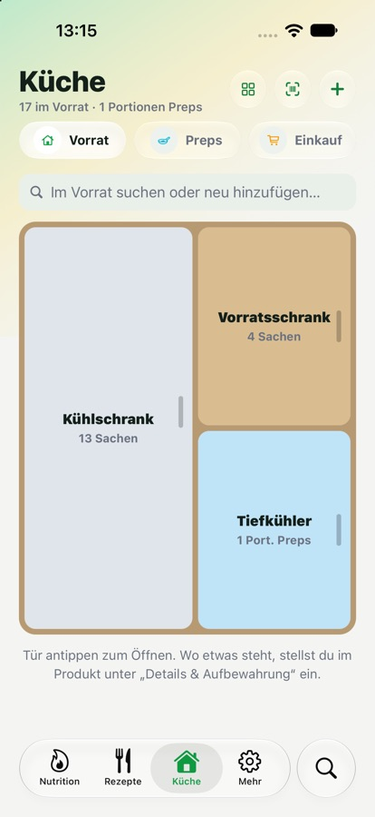
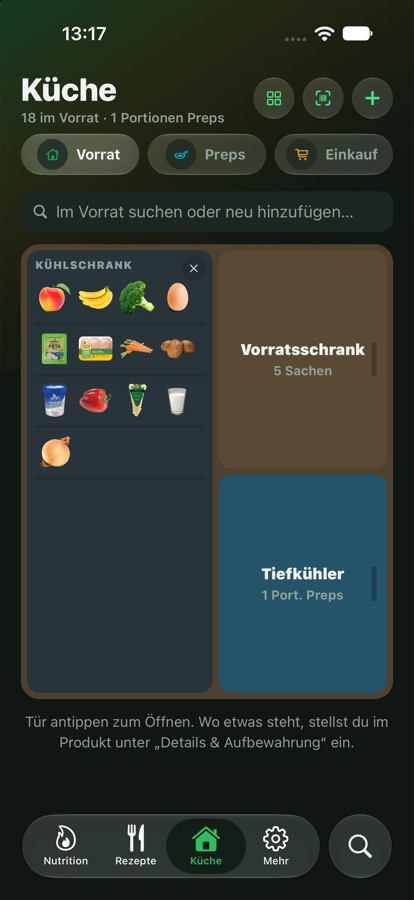
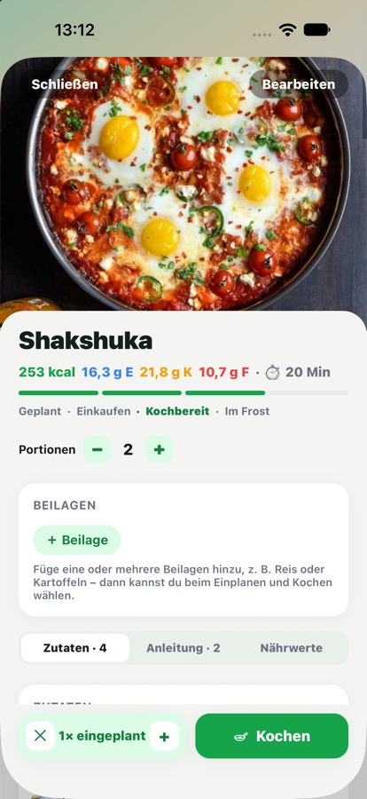
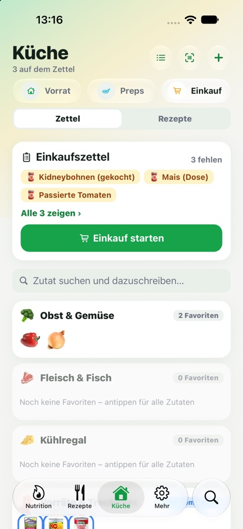

Die Meal-Prep-App, die weiß, was du zuhause hast. The meal-prep app that knows what’s in your kitchen.
Vorrat, Rezepte, Einkauf und Ernährung. In einer App, die alles miteinander verbindet, statt in vier, die nichts voneinander wissen. Pantry, recipes, groceries and nutrition. In one app that connects everything, instead of four that know nothing about each other.
Der KreislaufThe loop
Vier Schritte, die sich kennen.Four steps that know each other.
Was du kochst, kommt aus dem Vorrat. Was fehlt, landet auf dem Einkaufszettel. Was du isst, zählt automatisch. Nichts musst du doppelt eintippen.What you cook comes out of your pantry. What’s missing goes on the shopping list. What you eat counts automatically. You never type anything twice.
- 🏠
VorratPantry
Du siehst, was zuhause ist, mit Mengen, Aufbewahrung und Haltbarkeit.See what you have at home, with amounts, storage and best-before dates.
- 🍳
KochenCook
NutriPrep zeigt, was du jetzt kochen kannst, und zieht beim Kochen die Zutaten ab.NutriPrep shows what you can cook right now and deducts the ingredients when you do.
- 🛒
EinkaufenShop
Auf den Zettel kommt nur, was wirklich fehlt. Gekauftes landet direkt im Vorrat.Only what’s really missing goes on the list. What you buy goes straight into your pantry.
- 🍽️
EssenEat
Portion antippen, und Kalorien, Eiweiß, Kohlenhydrate und Fett sind eingetragen.Tap a portion and calories, protein, carbs and fat are logged.
↺ … und der Vorrat weiß wieder, was noch da ist.… and your pantry knows again what’s left.
Vorrat & PrepsPantry & preps
Deine Küche, endlich mit Überblick.Your kitchen, finally at a glance.
- 🗄️Kühlschrank, Schrank, TiefkühlerFridge, cupboard, freezerAlles mit Menge und Aufbewahrung. Als Liste, Raster oder als Schrank mit Türen zum Aufklappen.Everything with amount and storage place. As a list, a grid, or a cupboard with doors that open.
- 🧊Preps sind VorratPreps are pantrySonntags vorgekochte Portionen liegen im digitalen Tiefkühler. Unter der Woche nur noch antippen.Portions you cooked on Sunday sit in your digital freezer. During the week, just tap.
- ⏰Bald verbrauchenUse soonHaltbarkeit pro Lebensmittel, mit Vorschlag je Kategorie. Was in zwei Tagen abläuft, steht oben.Best-before dates per item, with a suggestion per category. What expires within two days shows up top.
- 📷Barcode scannenScan barcodesPackung scannen, Nährwerte kommen aus Open Food Facts. Dazu 522 Zutaten mit Nährwerten und Fotos.Scan a package and the nutrition facts come from Open Food Facts. Plus 522 ingredients with nutrition data and photos.


Rezepte & KochenRecipes & cooking
„Was kann ich heute kochen?“ Beantwortet.“What can I cook today?” Answered.
- ✅Kochbar mit echten MengenCookable, with real amountsNicht nur „Reis ist da“, sondern „300 g Reis reichen“. Jede Rezept-Kachel zeigt, wie viel davon schon im Vorrat ist.Not just “there’s rice”, but “300 g of rice is enough”. Every recipe tile shows how much of it is already in your pantry.
- 🎯Passt heuteFits todayRezepte und Preps, die zu deinen restlichen Kalorien und Makros des Tages passen.Recipes and preps that fit your remaining calories and macros for the day.
- 🗓️Wochenplan & Rezept-FlussWeek plan & recipe flowMontag bis Sonntag planen oder „Woche füllen“. Jedes Rezept wandert durch Einkaufen → Kochbereit → Im Frost.Plan Monday to Sunday or tap “Fill the week”. Every recipe moves through Shop → Ready to cook → Frozen.
- 👩🍳Kochmodus mit TimerCooking mode with timersSchritt für Schritt, mit Timer pro Schritt. „Fertig gekocht“ zieht die Zutaten ab und legt die Portionen als Preps an.Step by step, with a timer for each step. “Done cooking” deducts the ingredients and saves the portions as preps.
- 📥Eigene Rezepte, Ideen & ImportYour recipes, ideas & importSelbst schreiben, aus den Ideen übernehmen oder mit deiner eigenen KI importieren. Mit Beilagen zur Wahl, Portionen-Regler und Teilen.Write your own, pick from the ideas, or import with your own AI. With selectable sides, a servings slider and sharing.

EinkaufShopping
Ein Zettel, der deinen Kühlschrank kennt.A list that knows your fridge.
- 🧾Nur, was fehltOnly what’s missingGeplante Rezepte minus Vorrat ergibt den Einkaufszettel. Keine doppelt gekauften Sachen mehr.Planned recipes minus pantry equals your shopping list. No more buying things twice.
- ⭐Favoriten als Foto-RegaleFavourites as photo shelvesDeine Standard-Produkte zum Durchwischen. Antippen, Menge wählen, schon auf dem Zettel.Your staples to swipe through. Tap, choose an amount, and it’s on the list.
- 🛍️EinkaufsmodusShopping modeGroße Kacheln, sortiert nach deinem Weg durch den Laden. Antippen heißt gekauft, und es landet im Vorrat.Big tiles, sorted by your route through the store. Tap means bought, and it goes into your pantry.

Nutrition
Deine Ernährung im Blick. Ohne Diät-Druck.Your nutrition at a glance. Without diet pressure.
- ⭕Makro-Ringe für Tag, Woche, MonatMacro rings for day, week, monthKalorien, Eiweiß, Kohlenhydrate und Fett. Dazu 14 Mikronährstoffe, also Vitamine und Mineralstoffe.Calories, protein, carbs and fat. Plus 14 micronutrients, meaning vitamins and minerals.
- ⚡Schnell eingetragenLogged in secondsAus dem Vorrat, „Wie gestern“, „Zuletzt gegessen“ oder ohne Vorrat fürs Restaurant. Was du isst, wird vom Vorrat abgezogen.From your pantry, “Same as yesterday”, “Recently eaten”, or without pantry for eating out. What you eat is deducted from your pantry.
- 💧Wasser, Gewicht & ZieleWater, weight & goalsTrinkmenge mit Uhrzeit, Gewichtsverlauf und Tagesziele, die aus deinen Körperdaten berechnet werden.Water with time of day, weight history and daily goals calculated from your body data.
- 📈Statistik & Wochen-RückblickStats & weekly recapSerien, Durchschnitt, Ziel-Treffer und eine kleine Wochen-Geschichte zum Teilen.Streaks, averages, goal hits and a short weekly story you can share.
Gemeinsam & cleverTogether & smart
Und all die kleinen Dinge.And all the little things.
Vorrat, Einkauf und Rezepte gemeinsam, per Code verbunden. Fotos sieht der ganze Haushalt.Pantry, shopping and recipes together, connected by code. The whole household sees the photos.
Separat wählbar: Ihr seht gegenseitig nur das, was ihr freigebt.Chosen separately: you only see what each of you decides to share.
Rezept, Produkt oder Essen-Foto: NutriPrep schreibt den Auftrag, du fügst die Antwort deiner KI ein.Recipe, product or meal photo: NutriPrep writes the prompt, you paste your AI’s answer.
Ziel, Körper, Grundvorrat, und schon zeigt die App, was du kochen kannst.Goal, body, basic pantry, and the app already shows what you can cook.
Rezepte, Vorrat und alle Zutaten in einem Suchfeld.Recipes, pantry and all ingredients in one search field.
Im Look von iOS, mit Liquid Glass und Apple-Symbolen.Looks at home on iOS, with Liquid Glass and Apple symbols.
Keine Werbung, kein Tracking in der App.No ads and no tracking in the app.
Einzelne Bereiche oder alles löschen, direkt in der App.Delete single areas or everything, right in the app.
Warum es NutriPrep gibtWhy NutriPrep exists
Ich wollte eine App, die alles kann. Es gab keine.I wanted an app that does it all. There wasn’t one.
Rezepte in einer App, Kalorien in der zweiten, die Einkaufsliste auf Papier und keine Ahnung, was noch im Tiefkühler liegt. Also habe ich NutriPrep gebaut, als meine erste App, ohne programmieren zu können. Jetzt teste ich sie mit den ersten Menschen und freue mich über jede Rückmeldung.Recipes in one app, calories in another, the shopping list on paper, and no idea what’s left in the freezer. So I built NutriPrep, my first app, without knowing how to code. Now I’m testing it with the first people and I’m grateful for every bit of feedback.
Nikita · Gründerin von NutriPrepfounder of NutriPrep
Am Tisch ist noch ein Platz frei.There’s a seat for you at the table.
Trag dich ein, und ich schreibe dir, wenn NutriPrep im App Store erscheint. Kein Spam, jederzeit abmeldbar.Sign up and I’ll let you know when NutriPrep launches on the App Store. No spam, unsubscribe any time.
Lieber gleich ausprobieren?Rather try it right away? Beta über TestFlight testenJoin the beta on TestFlight
FragenQuestions
Was kostet NutriPrep?How much does NutriPrep cost?
Die Beta ist kostenlos. Wie es nach dem Start im App Store weitergeht, steht hier, sobald es feststeht.The beta is free. What happens after the App Store launch will be posted here once it’s decided.
Wie teste ich die Beta?How do I join the beta?
Öffne den TestFlight-Link auf deinem iPhone. Er führt dich zur App TestFlight von Apple, über die du NutriPrep installierst.Open the TestFlight link on your iPhone. It takes you to Apple’s TestFlight app, which installs NutriPrep.
Gibt es NutriPrep für Android?Is there an Android version?
Noch nicht. Zuerst kommt das iPhone, Android ist geplant.Not yet. iPhone comes first, Android is planned.
Wo sind meine Daten?Where is my data stored?
Deine Daten werden verschlüsselt übertragen und in deinem Konto bei unserem Cloud-Anbieter gespeichert, damit sie auf mehreren Geräten und im Haushalt verfügbar sind. Alles Genaue steht in der Datenschutzerklärung.Your data is transferred encrypted and stored in your account with our cloud provider, so it’s available on several devices and in your household. All the details are in the privacy policy.
Ist NutriPrep eine Diät-App?Is NutriPrep a diet app?
Nein. NutriPrep hilft dir, Vorrat, Kochen und Ernährung zu organisieren. Die berechneten Ziele sind Richtwerte und keine medizinische Beratung.No. NutriPrep helps you organise your pantry, cooking and nutrition. The calculated goals are guidelines, not medical advice.